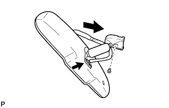

INNER REAR VIEW MIRROR > INSTALLATION |
| 1. INSTALL INNER REAR VIEW MIRROR ASSEMBLY |
|  |
Using a T20 "TORX" socket wrench, install the inner rear view mirror with the screw.
Connect the connector.
| 2. INSTALL INNER REAR VIEW MIRROR STAY HOLDER COVER |
 |
Attach the 2 claws.
 |
Attach the 2 claws as shown in the illustration to install the inner rear view mirror stay holder cover.